Robot learning models have been proliferating with increasingly stronger results for both generalist and specialist policies. However, true deployment potential of these learned policies is still unknown. As the community closes in on translational research, it is now ever more crucial to develop mechanisms that not only enable interpretability but intervention as well, e.g., through concept bottleneck models. In this work, we present an initial investigation along the lines of an interpretable spatial concept bottleneck that acts as a meaningful intermediate representation between a perception-planning backbone and an action head. Specifically, we define a spatial concept as a geometric relationship between entities corresponding to the task and the robot, which can be computed directly from the scene's geometry, and instantiate it for both navigation and manipulation. We present a series of experiments demonstrating that such a spatial concept bottleneck maintains original performance (without the bottleneck), while serving as an interpretable interface through which humans or VLMs can intervene to correct or steer the robot.
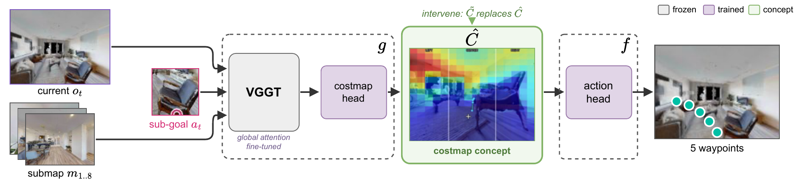
Each pixel's distance to the sub-goal \(a_t\).
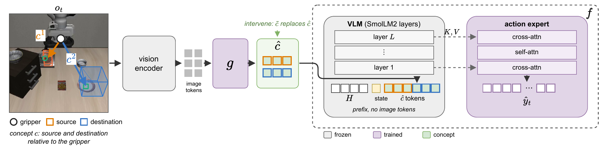
Source and destination relative to the gripper, binned by \(\beta\).
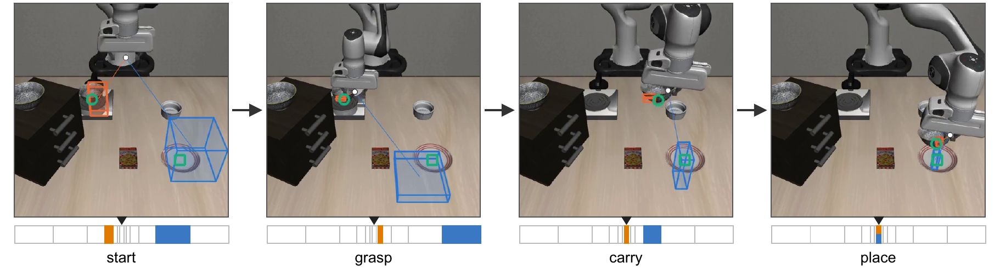
The concept along one rollout, with the bin of the source (orange) and the destination (blue) drawn around the gripper.
Spatial CBM is on par or better than predicting Direct Actions.
| Imitate | Alt Goal | Shortcut | Reverse | Average | ||||||
|---|---|---|---|---|---|---|---|---|---|---|
| Method | SPL | SSPL | SPL | SSPL | SPL | SSPL | SPL | SSPL | SPL | SSPL |
| GT-Geodesics | 96.43±2.34 | 98.78±1.72 | 86.53±4.07 | 91.16±3.20 | 88.42±0.20 | 91.67±1.19 | 82.99±0.32 | 91.97±0.39 | 88.59±1.63 | 93.40±0.83 |
| GT-ED | 72.16±2.00 | 74.58±1.53 | 70.29±4.89 | 78.49±5.94 | 67.76±2.28 | 70.72±3.19 | 68.41±2.51 | 77.53±1.12 | 69.65±1.78 | 75.33±1.35 |
| Direct Action | 82.61±5.77 | 86.92±3.07 | 59.99±13.07 | 67.84±12.07 | 61.15±5.91 | 71.86±4.21 | 18.41±3.28 | 34.47±2.82 | 55.54±0.47 | 65.28±0.49 |
| Spatial CAM | 87.25±0.03 | 89.70±0.46 | 28.18±7.16 | 41.45±9.01 | 38.13±0.27 | 42.01±0.70 | 7.86±2.25 | 15.71±0.78 | 40.36±1.17 | 47.22±2.00 |
| Spatial CBM* | 81.14±5.83 | 86.44±2.54 | 57.81±2.94 | 68.08±3.56 | 66.06±3.92 | 74.20±2.97 | 12.55±0.08 | 27.33±2.27 | 54.39±3.19 | 64.01±1.70 |
| Spatial CBM | 80.80±2.08 | 86.12±1.82 | 68.27±6.43 | 73.89±5.33 | 73.06±2.69 | 80.29±1.80 | 19.38±10.22 | 33.73±9.12 | 60.38±5.36 | 68.51±4.52 |
SPL and SSPL on four navigation tasks, with the best non-oracle scores in bold.
With true concepts the spatial bottleneck performs on par with Direct Action, and swapping the source and destination brings the GT policy down to 4.5%.
| Method | T1 | T2 | T3 | T4 | T5 | T6 | T7 | T8 | T9 | T10 | Average |
|---|---|---|---|---|---|---|---|---|---|---|---|
| GT | 100.0±0.0 | 97.5±3.5 | 100.0±0.0 | 95.0±0.0 | 75.0±7.1 | 25.0±0.0 | 97.5±3.5 | 100.0±0.0 | 87.5±17.7 | 70.0±7.1 | 84.8±2.5 |
| Direct Action | 97.5±3.5 | 100.0±0.0 | 97.5±3.5 | 97.5±3.5 | 70.0±7.1 | 27.5±3.5 | 92.5±10.6 | 95.0±0.0 | 82.5±3.5 | 77.5±10.6 | 83.8±1.8 |
| Spatial CBM* | 95.0±7.1 | 95.0±0.0 | 92.5±10.6 | 90.0±7.1 | 65.0±0.0 | 15.0±0.0 | 95.0±7.1 | 92.5±3.5 | 75.0±7.1 | 57.5±3.5 | 77.2±2.5 |
| Spatial CBM | 90.0±0.0 | 85.0±0.0 | 95.0±0.0 | 90.0±7.1 | 62.5±3.5 | 12.5±3.5 | 95.0±0.0 | 87.5±10.6 | 75.0±7.1 | 57.5±3.5 | 75.0±0.7 |
| Intervention | |||||||||||
| Spatial CBM, intervened | 95.0±0.0 | 87.5±3.5 | 97.5±3.5 | 95.0±0.0 | 67.5±3.5 | 17.5±3.5 | 97.5±3.5 | 95.0±0.0 | 82.5±10.6 | 62.5±3.5 | 79.8±2.5 |
| Ablations | |||||||||||
| No concept | 90.0±7.1 | 80.0±7.1 | 87.5±3.5 | 85.0±0.0 | 62.5±3.5 | 15.0±0.0 | 90.0±7.1 | 72.5±3.5 | 62.5±3.5 | 37.5±3.5 | 68.2±2.5 |
| GT, swapped† | 40.0 | 0.0 | 0.0 | 5.0 | 0.0 | 0.0 | 0.0 | 0.0 | 0.0 | 0.0 | 4.5 |
Success (%) on the ten LIBERO-Spatial tasks over two training seeds (†one seed).
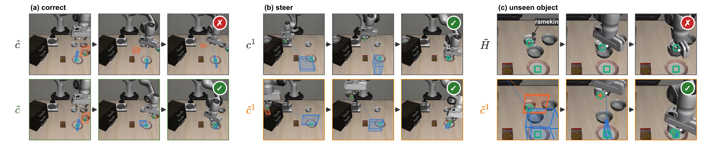
(a) Correction: the robot fails with the predicted concept and succeeds with the corrected one.
(b) Steering: the intervener provides the other, identical bowl as the source, and the robot places that bowl instead.
(c) Unseen object: Direct Action does not place the ramekin when its instruction asks for it, whereas providing the ramekin as the source makes the robot place it.
Claude sees the predicted costmap, never the true one, and names a sector or “none”.
Each video shows the camera and the costmap the controller receives, where blue is cheap and the white box is the minimum.
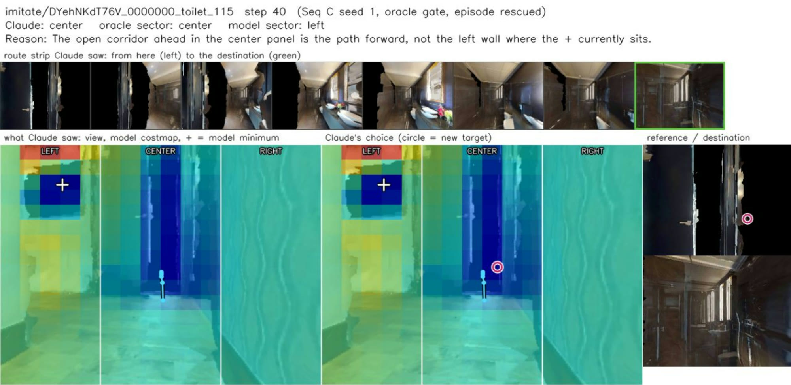
Imitate: Claude moves the costmap's minimum off a wall onto the corridor, which is also the oracle's sector.
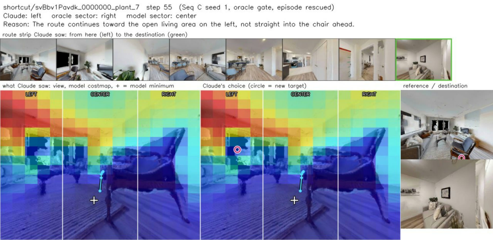
Shortcut: Claude steers the robot off the furniture toward the open living area, against the oracle's sector.
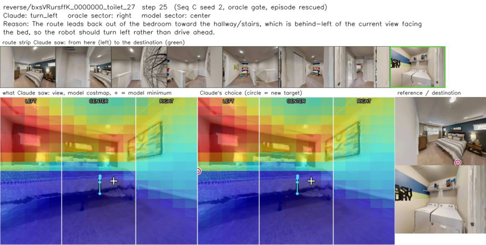
Reverse: Claude recognizes that the way out of the bedroom is behind and to the left.
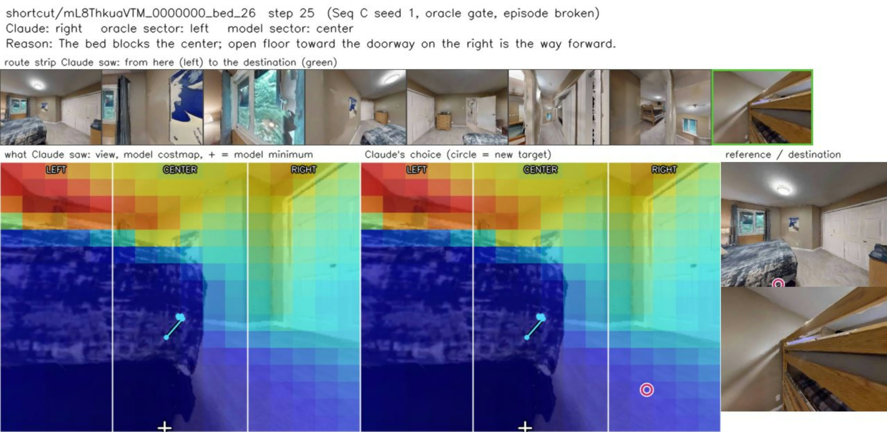
Shortcut, behind the oracle trigger: Claude goes around the bed to the right where the oracle's sector was left, and the episode is lost.
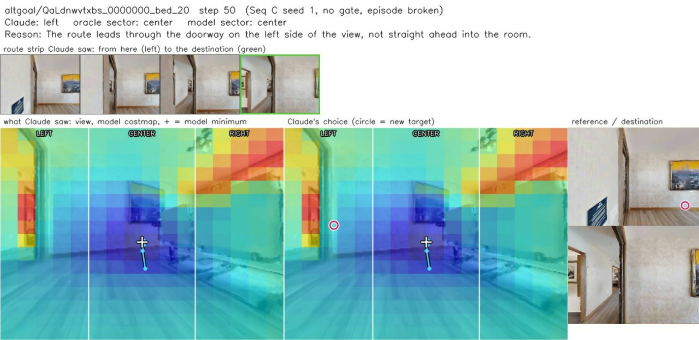
Alt-goal, without the trigger: the predicted costmap was correct, and Claude moves its minimum to a doorway on the left.
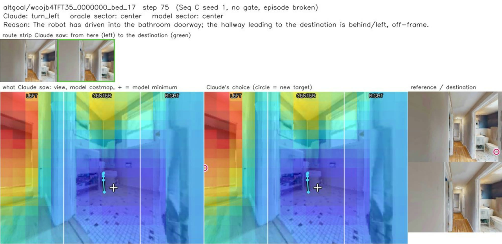
Alt-goal, without the trigger: the robot is already at the doorway the costmap points into, and Claude turns it back toward the hallway.
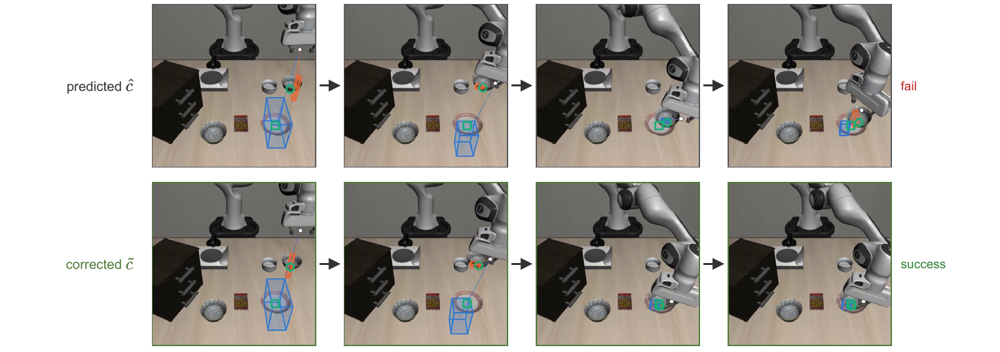
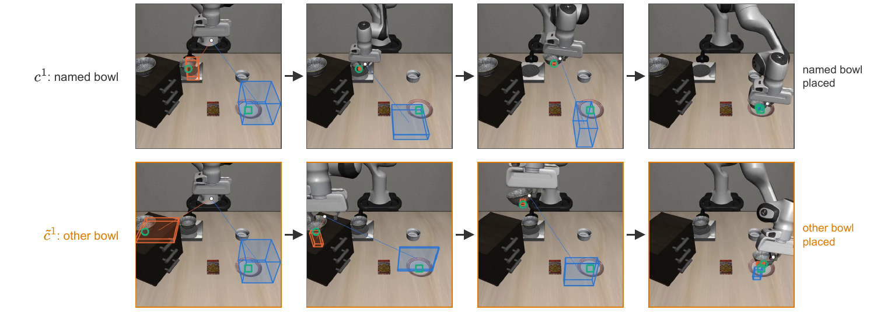
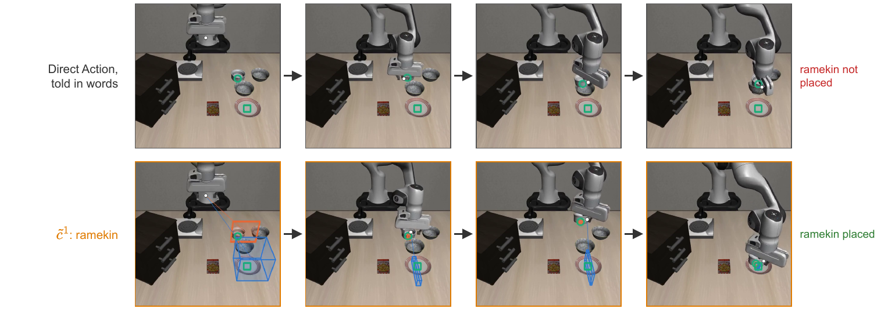